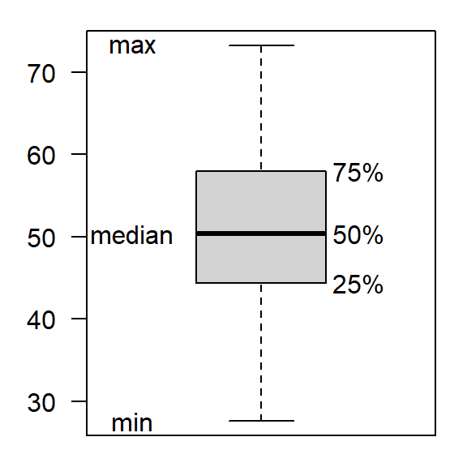

Applied Statistics – A Practical Course
2024-01-09
\(\rightarrow\) Remember: calculation of statistical parameters is called estimation
Properties of statistical parameters
Depending on a particular question, different classes of parameters exist, especially measures of location (e.g. mean, median), variation (e.g. variance, standard deviation) or dependence (e.g. correlation).
Arithmetic mean
\[ \bar{x} = \frac{1}{n} \cdot {\sum_{i=1}^n x_i} \]
Geometric mean
\[ G = \sqrt[n]{\prod_{i=1}^n x_i} \]
more practical: logarithmic form:
\[ G =\exp\Bigg(\frac{1}{n} \cdot {\sum_{i=1}^n \ln{x_i}}\Bigg) \]
avoids huge numbers that make problems for the computer.
Harmonic mean
\[ \frac{1}{H}=\frac{1}{n}\cdot \sum_{i=1}^n \frac{1}{x_i} \quad; x_i>0 \]
Example:
You drive with 50km/h to the university and with 100km/h back home.
What is the mean velocity?
Result:
1/((1/50 + 1/100)/2) = 1/((0.02 + 0.01)/2) = 1/0.015 = 66.67
\(n\) uneven: sort data, take the middle value
\[\tilde{x} = x_{(n+1)/2}\] \(n\) even: sort data, take average of the two middle values
\[\tilde{x} = \frac{x_{n/2}+x_{n/2+1}}{2}\]
Example
| sample with 7 values | 2.9, 7.9, 4.1, 8.8, 9.4, 0.5, 5.3 |
| ordered sample | 0.5, 2.9, 4.1, 5.3, 7.9, 8.8, 9.4 |
\(\Rightarrow\) median: \(\tilde{x} = 5.3\)
\(\Rightarrow\) mean: \(\bar{x} = 5.5571429\)
Example: sample with 20 values, exclude 10% at both sides
0.4, 0.5, 1, 2.5, 2.9, 3.3, 4.1, 4.5, 4.6, 5.3, 5.5, 5.7, 6.8, 7.9, 8.8, 8.9, 9, 9.4, 9.6, 46
\(\rightarrow\) arithmetic mean: \(\bar{x}=7.335\)
\(\rightarrow\) trimmed mean: \(\bar{x}_{t, 0.1}=5.6375\)
First guess: middle of most-frequent class.
\[\begin{align} D &= x_{lo}+\frac{f_k-f_{k-1}}{2f_k-f_{k-1}-f_{k+1}}\cdot w \\ D &= 18 + \frac{29 - 15}{2 \cdot 29 - 15 - 26} \cdot 2 = 19.65 \end{align}\]
\(f\): class frequency, \(w\): class width
\(k\): the index of the most abundant class, \(x_{lo}\) its lower limit.
Somewhat more computer intensive, where the mode is the maximum of a kernel density estimate.
The mode from the density estimate is then \(D=19.42\).
Example: fish population with several age classes, cohorts)
Variance
\[ s^2_x = \frac{SQ}{df}=\frac{\sum_{i=1}^n (x_i-\bar{x})^2}{n-1} \]
Standard deviation
\[s=\sqrt{s^2}\] \(\rightarrow\) same unit as the mean \(\bar{x}\), so they can be directly compared.
In practice, \(s^2\) is often computed with:
\[ s^2_x = \frac{\sum{(x_i)^2}-(\sum{x_i})^2/n}{n-1} \]
Is the relative standard deviation:
\[ cv=\frac{s}{\bar{x}} \]
Example
Let’s assume we have the discharge of two rivers, one with a \(cv=0.3\), another one with \(cv=0.8\). We see that the 2nd has more extreme variation.
The range measures the difference between maximum and minimum of a sample:
\[ r_x = x_{max}-x_{min} \]
Disadvantage: very sensitive against outliers.
\[ I_{50}=Q_3-Q_1=P_{75}-P_{25} \]
Ordered sample

For normally distributed samples, fixed relationship between \(I_{50}\) and \(s\):
\[ \sigma = E(I_{50}/(2\Phi^{-1}(3/4))) \approx E(I_{50}/1.394) % 2*qnorm(3/4)) \]
where \(\Phi^{-1}\) is the quantile function of the normal distribution.
The median of the absolute differences between median and values.
\[ MAD = \text{median}(|\text{median} - x_i|) \]
\(\rightarrow\) Be careful and check the software docs!
\[ s_{\bar{x}}=\frac{s}{\sqrt{n}} \]
Rule of thumb for a sample size of about \(n > 30\):
More about this will be explained in the next sections.